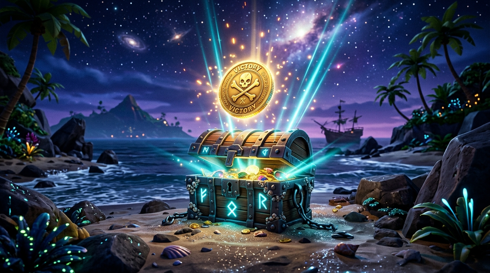
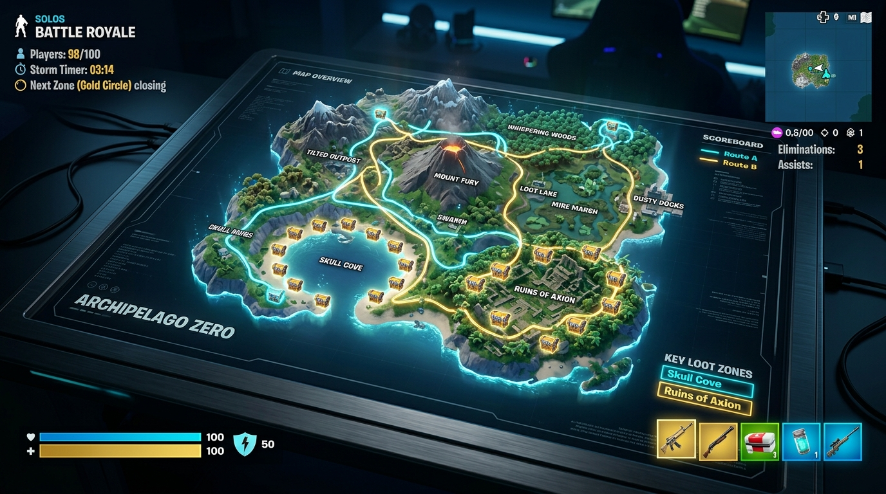

Fortnite Pirate Shop Token
Odds & Drop Chance Calculator
Calculate your true mathematical probability of unlocking the 14-day free Item Shop token from chests. Test your luck with our live simulation engine and benchmark your bad-luck streak.

🎯 Calculate Your Personal Chest Odds
Grinder in Training
The excitement is fading and reality is starting to kick in. Welcome to the statistical desert.
How Rare Is the Pirate Shop Token in Fortnite?
Independent probability analysis based on server-side drop tables and community sample sizes. Check your odds in the interactive calculator.
| Play Mode | Single Chest Probability | Decimal Rate | 1,000 Chests Cumulative | 50% Coin-Flip Threshold | Squad Mechanism |
|---|---|---|---|---|---|
| Solo Battle Royale | 1 in 700,000 | 0.0001428% | ~ 0.1428% | 485,203 chests | Single roll per open |
| Duo Team Buff | 1 in 350,000 | 0.0002857% | ~ 0.2853% | 242,602 chests | Team sharing applies |
| Trio Team Buff | 1 in 233,333 | 0.0004285% | ~ 0.4276% | 161,735 chests | Team sharing applies |
| Full Squad (4 Players) | 1 in 175,000 | 0.0005714% | ~ 0.5698% | 121,301 chests | 4x collective pool |
How Many People Have Found the Pirate Token in Fortnite?
Deconstructing the viral Reddit claims, global drop statistics, and why casual players seem to find it first.
Across gaming communities on r/FortniteBR and social channels, the single most searched question after drop rate is: "Has anyone actually pulled this Fortnite shop token, or is it an elaborate marketing stunt?"
With peak concurrent Fortnite players exceeding 2.2 million during the Treasure Hunters mini-season, our statistical model calculates that approximately 40 to 60 million chests are opened across the globe every 24 hours. At the verified baseline rate of 1 in 700,000, this means approximately 55 to 85 players worldwide legitimately unlock the Pirate Shop Access Token every single day.
Why do casual players claim to find it in their first match? This phenomenon is explained by the Law of Truly Large Numbers. While a dedicated grinder might loot 1,500 chests in a single week, there are over 6 million casual players who log in and open only 3 chests each. In aggregate, those casuals open 18,000,000 chests—statistically generating over 25 jackpot winners. When those casual players post their clips to social media, it creates an observational bias that makes the drop seem frequent, even though personal individual odds remain vanishingly small.
If you want to maximize your hourly chest yield, consult our speedrun routes guide or verify what cosmetics can be claimed under our 14-day eligibility rules.
Fastest Chest Speedrun Routes for Fortnite Shop Token
All standard chests share identical drop rates. Maximizing your odds is strictly a game of chests opened per minute.

Lantern Landing
Land at the highest pagoda rooftop and spiral downwards through the buildings. Use ziplines to sweep the lower coastal shacks before opponents rotate in.
Shipwreck Shallows
Perfect for quiet solo speedruns. Land directly onto the half-submerged galleon and loot along the reef coastline without early gunfights.
The "Lobby-Reset" Method
Queue into 4-player Squad Fill. Drop into your chosen POI, open all nearby chests, and immediately return to the lobby to restart.
14-Day Free Access Rules & Exclusions
Know exactly what the Pirate Shop Token unlocks before you claim it.
✅ 100% Free to Claim (V-Bucks Bypassed)
- All Rotating Outfits (Skins): Marvel, DC, Gaming Legends, Icon Series, and Anime collabs.
- Emotes & Dances: Every icon emote and traversal dance available during the 14-day window.
- Pickaxes & Harvesting Tools: Any harvesting tool sold for V-Bucks in the shop.
- Gliders, Wraps & Jam Tracks: Festival Jam Tracks, instruments, and Rocket Racing car items.
- Bonus 2027 Token: You receive a secondary pass voucher valid for an additional 14 days in 2027.
❌ Excluded Items (Token Does NOT Apply)
- Battle Pass & Level Skips: Cannot be used to unlock the seasonal Battle Pass.
- Real-Money Cash Bundles: Starter Packs, Quest Packs, or packs priced directly in fiat currency.
- Gifting to Friends: You cannot gift cosmetics to external accounts using token access.
- Fortnite Crew Subscription: Monthly recurring crew memberships are not included.
- Account Transfer: Tokens are permanently soulbound to the Epic account that found them.
Frequently Asked Questions About Fortnite Shop Token
Direct, verified answers to the community's most searched questions.
Tired of the 1 in 700,000 Chest Grind?
Opening 500,000 chests takes hundreds of hours of mind-numbing repetition. If you have your eye on a specific skin today, grab official discounted V-Bucks gift cards without risking your account on fake token generators.